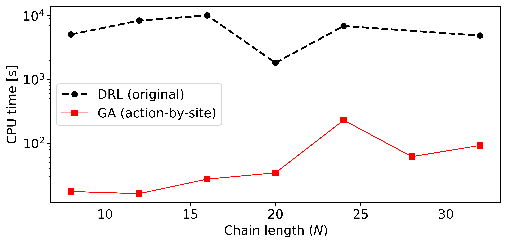
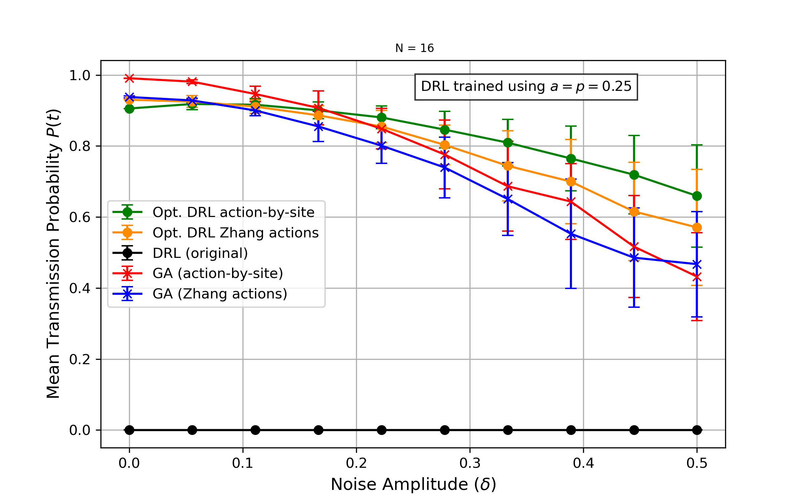
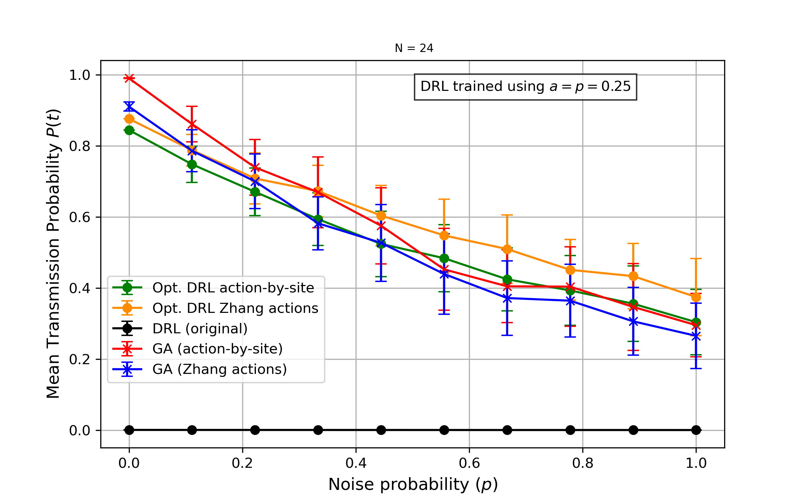
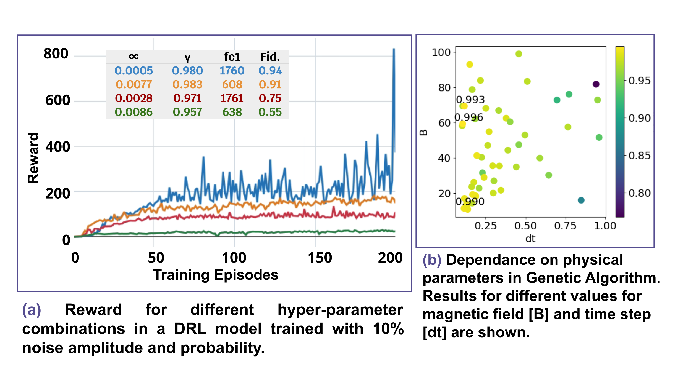

¿Qué estrategia de optimización conviene más para controlar un sistema cuántico mediante pulsos magnéticos: Deep Reinforcement Learning o algoritmos genéticos? Este trabajo compara ambos enfoques para la transmisión de estados cuánticos en cadenas de qubits, midiendo fidelidad, costo computacional y robustez al ruido. El resultado: el GA alcanza fidelidades más altas y es entre 2 y 3 órdenes de magnitud más rápido, aunque el DRL tiene ventaja en escenarios ruidosos si se entrena con domain randomization.
La transferencia de estado cuántico (QST) a través de cadenas de espín homogéneas desempeña un papel crucial en la construcción de hardware cuántico escalable. Un protocolo básico de transmisión de estados cuánticos prepara un estado en un qubit y lo transfiere a otro a través de un canal, buscando minimizar el tiempo y evitar pérdida de información. La fidelidad del proceso se mide mediante funciones proporcionales a la probabilidad de transición entre ambos estados.
Tomando como punto de partida el trabajo de Zhang et al. [1], que propone el uso de deep reinforcement learning para controlar la transferencia de estados cuánticos, abordamos este problema de optimización mediante pulsos magnéticos constantes y dos estrategias complementarias: aprendizaje por refuerzo profundo (DRL), donde un agente aprende secuencias de pulsos mediante recompensas, y algoritmos genéticos (GA), que desarrollan soluciones candidatas mediante selección y mutación. Analizamos la eficiencia de ambos métodos y su capacidad para incorporar restricciones físicas.
Control Dinámico
El sistema consiste en una cadena de N qubits que evoluciona bajo Hamiltonianos independientes del tiempo por intervalos. El control se implementa mediante pulsos de campo magnético aplicados en subintervalos de tiempo discretos:
- En cada subintervalo se aplica una configuración Bk,j de campos elegida de un conjunto de configuraciones posibles
- Se busca encontrar una secuencia óptima de 5N compuertas de un qubit que transmitan el estado desde el primer al último qubit
- Las configuraciones posibles de campos definen el espacio de acciones
En este trabajo exploramos dos espacios de acciones diferentes:
- Espacio de acciones original de Zhang et al.: Un conjunto de 16 acciones que aplican campos magnéticos predefinidos sobre sitios específicos de la cadena, tal como fue propuesto en el trabajo original.
- Una acción por sitio: Un espacio de acciones simplificado donde cada acción consiste en encender un campo magnético sobre un único sitio de la cadena (N acciones posibles), permitiendo mayor granularidad en el control.
Estrategias de Control
Algoritmos Genéticos (GA)
El algoritmo genético se implementó usando PyGAD con evaluación paralela de poblaciones mediante PyTorch:
- La población inicial consiste en secuencias aleatorias de 5N acciones
- Se simula la aplicación de cada secuencia y se les asigna una fitness proporcional a la calidad de transmisión
- Se seleccionan las secuencias de mayor fidelidad como padres y se genera una nueva población mediante cruzamiento y mutación
- La estructura y simpleza del algoritmo genético permiten que sea fácil de paralelizar en GPU
Deep Reinforcement Learning (DRL)
El agente DRL se implementó como una Deep Q-Network (DQN) con replay de experiencia priorizado usando TensorFlow, adaptado de la implementación de Zhang et al.:
- El espacio de estados codifica la distribución de excitación a lo largo de la cadena: s(t) = (c₁,c₂,...,cN)
- Se entrena un modelo que con prueba y error encuentra el valor de cada acción para un estado dado, clasificándolas con una recompensa
- Inyección de ruido durante el entrenamiento episódico para mejorar la robustez (domain randomization)
- El desempeño de DRL depende fuertemente de la elección de hiperparámetros y condiciones de entrenamiento
Comparación de Desempeño
Ambos métodos se evaluaron en términos de fidelidad máxima, desempeño promedio y costo computacional.
Fidelidad: GA vs DRL

Fidelidades medias (--) y máximas (—) usando DRL con parámetros originales (azul), GA con acciones originales (negro) y con una acción por sitio (rojo).
Tiempos de CPU

Tiempos de ejecución requeridos por GA (negro) y DQN (rojo) para alcanzar sus criterios de convergencia.
Observaciones clave:
- El algoritmo genético permite obtener secuencias que alcanzan fidelidades más altas que el algoritmo de DRL original
- Para cadenas de más qubits es conveniente cambiar el conjunto de acciones y agregar sitios de control
- El algoritmo DQN emplea tiempos de ejecución entre 2 y 3 órdenes de magnitud mayores que los requeridos por el GA
Robustez frente al Ruido
Los protocolos de control se probaron bajo un modelo de ruido dinámico, donde con probabilidad p en cada paso se multiplican los coeficientes cj por fases aleatorias eiθj (θ ∈ [-a, a]).
N=16: Amplitud fija

Probabilidad de transmisión vs probabilidad de ruido (amplitud fija a=0.25).
N=16: Probabilidad fija

Probabilidad de transmisión vs amplitud de ruido (probabilidad fija p=0.25).
N=24: Amplitud fija

Probabilidad de transmisión vs probabilidad de ruido (amplitud fija a=0.25).
N=24: Probabilidad fija

Probabilidad de transmisión vs amplitud de ruido (probabilidad fija p=0.25).
Resultados principales:
- Para cadenas más largas, las secuencias generadas por el GA exhiben mayor resiliencia al ruido dinámico con amplitudes pequeñas y probabilidades de ocurrencia bajas
- A medida que la intensidad del ruido aumenta, la probabilidad de transmisión promedio del método DQN eventualmente supera la del GA
- Los modelos de DRL pueden adaptarse al ruido cuando se entrenan explícitamente bajo condiciones ruidosas (domain randomization)
Sensibilidad a Hiperparámetros
Un análisis sistemático revela que el desempeño de DRL depende críticamente de la elección de tasa de aprendizaje, factor de descuento y escalado de recompensa. En contraste, el comportamiento del GA está gobernado por un conjunto más pequeño de parámetros intuitivos. La optimización de hiperparámetros se realizó utilizando Optuna.

Recompensa en función de los episodios de entrenamiento para diferentes configuraciones de hiperparámetros optimizados con Optuna.
GA para Cadenas Largas

Probabilidad de transmisión vs longitud de cadena. El GA mantiene probabilidades mayores a 0.97 incluso para cadenas de 128 qubits.
Conclusiones
- Los algoritmos genéticos ofrecen simplicidad, robustez y alto desempeño con ajuste mínimo de parámetros.
- El deep reinforcement learning proporciona flexibilidad y adaptabilidad pero requiere optimización cuidadosa de hiperparámetros y tiempos de entrenamiento más largos.
- Controlar sistemas cuánticos ruidosos requiere un método que, en el límite de ruido cero, alcance un desempeño comparable al del GA, y que pueda entrenarse bajo condiciones ruidosas sin degradación sustancial.
- Estos resultados destacan los trade-offs entre enfoques basados en aprendizaje y evolutivos y proporcionan guía práctica para diseñar protocolos de control en dispositivos cuánticos realistas.
Tecnologías
Estado del Trabajo
Este trabajo fue desarrollado como parte de mi investigación doctoral. El artículo se encuentra actualmente en revisión y representa una contribución original al campo del control cuántico mediante técnicas de optimización computacional.
Referencias
[1] X.-M. Zhang et al., Physical Review A 97, 052333 (2018). DOI: 10.1103/PhysRevA.97.052333